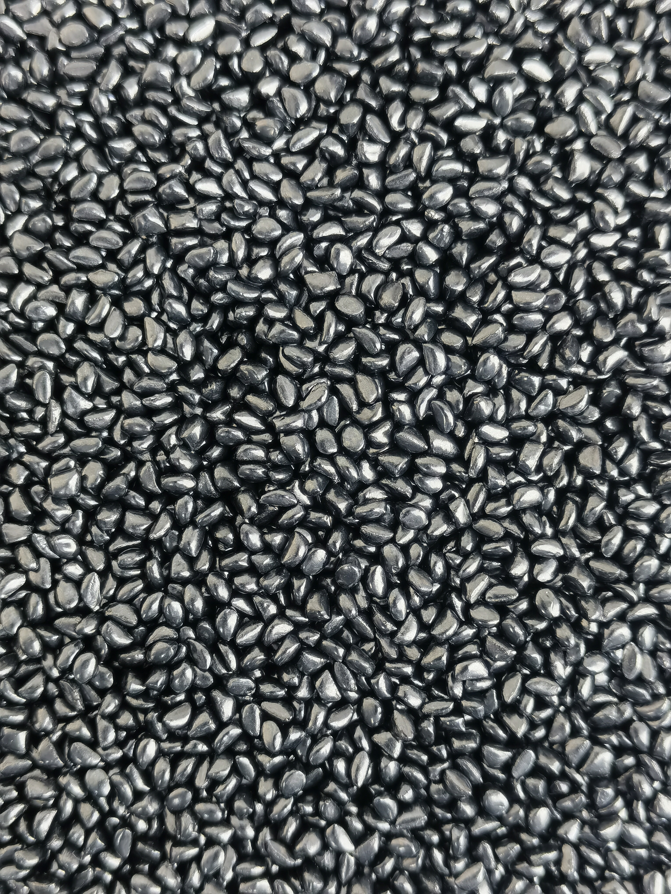

Shopping and carrier bags
Black film for retail bags. Surface, opacity and dispersion are checked on the actual film line.
Five BK grades from 20% to 40% carbon black for blown film, bags and packaging structures.
Share the resin, film structure, thickness and target appearance. The team reviews dispersion, filler level, let-down and documents by exact grade before a sample or quote.

Start with the film and the job it has to do. A thick bag, a thin packaging film and a co-extruded structure do not place the same demand on dispersion, filler or let-down.
Black film for retail bags. Surface, opacity and dispersion are checked on the actual film line.
Cost-led black film. Filler level, opacity and line speed are reviewed together, not as separate targets.
Film structure, thickness, print or lamination needs and target blackness guide the grade review.
Layer position and carrier compatibility are confirmed before a grade is proposed.
The current TDS examples show a trade-off between carbon black and CaCO3 filler. The right position depends on thickness, appearance target and filler tolerance.
| Grade | Carbon black | Carrier | CaCO3 filler | Film position |
|---|---|---|---|---|
| BK020 | 20% | LLDPE + LDPE, 22% | 47.8% | Cost-led; thick film and bags |
| BK025 | 25% | LLDPE + LDPE, 25% | 37.8% | Economy film and bags |
| BK030 | 30% | LLDPE + LDPE, 32% | 27.8% | Balanced film and molding |
| BK035 | 35% | LLDPE + LDPE, 37% | 17.8% | Higher blackness; lower filler |
| BK040 | 40% | LLDPE + LDPE, 40% | 5.8% | High jetness; low let-down |
* Current TDS examples. Addition range is a starting recommendation, not a fixed dosage. Confirm the current grade, revision and packaging for the offered product.
Film exposes dispersion and contamination quickly. The checks below keep the grade comparison tied to the actual line and film.
Look for specks, streaks and gels. Record the screen pack and pressure history rather than treating one reading as the cause.
Define the target with a physical reference, film thickness and viewing or measurement conditions.
Record monolayer or co-extruded, layer position and thickness. A grade confirmed in one layer is not automatically right for another.
Start from the current TDS recommendation and confirm the actual ratio on the line. A lower ratio only helps if the film still meets the target.
Compare the problem run with a control run. A pressure rise is a clue, not proof of the material source.
Agree the resin, structure, thickness, ratio and inspection method before the trial. The full selection sequence is in the blown film guide.
Four steps, with the grade and document scope confirmed before a commercial offer.
Resin, structure, thickness, target appearance, current grade and expected volume.
Carrier, carbon black, filler, MFI and let-down direction are checked against the film.
Agree the line conditions and control sample before judging the result.
TDS, COA, SDS and compliance scope are reviewed by exact grade and application.
It depends on thickness, filler tolerance, blackness and let-down. The current TDS examples place BK020 and BK025 at the cost-led end, BK030 in the middle, and BK035/BK040 at the higher-blackness, lower-filler end. Start with the film requirement, then confirm the grade in a trial.
The current BK range covers 20% to 40% carbon black. A higher loading can reduce the amount of masterbatch needed, but it still has to disperse and feed consistently at the final ratio.
The current TDS examples list a 2% to 5% recommended addition range. Treat it as a starting point for the listed grades; confirm the ratio on the actual film line and record the feeder setting.
Documents are reviewed by exact grade, batch, application and destination market. Use the technical document request and the team will confirm what applies to the offered product.
Food-contact suitability is not a product-line claim. It depends on the exact grade, application, market and the corresponding documents. Those points are reviewed separately.
Share the current TDS, a sample and the film structure. The team can compare the position and propose a trial direction; the result still has to be confirmed on your line.
Send the resin, film structure, thickness, target appearance and expected volume. The team will review the grade and document scope before a quote or sample.

A masterbatch supplier supporting plastic processors through black and desiccant product routes, application-led review and grade-specific document requests.